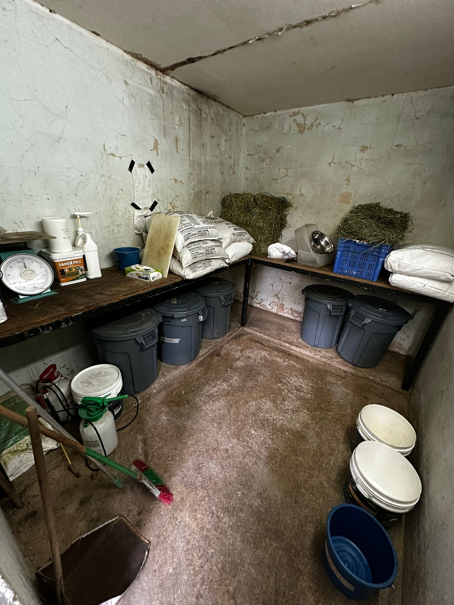
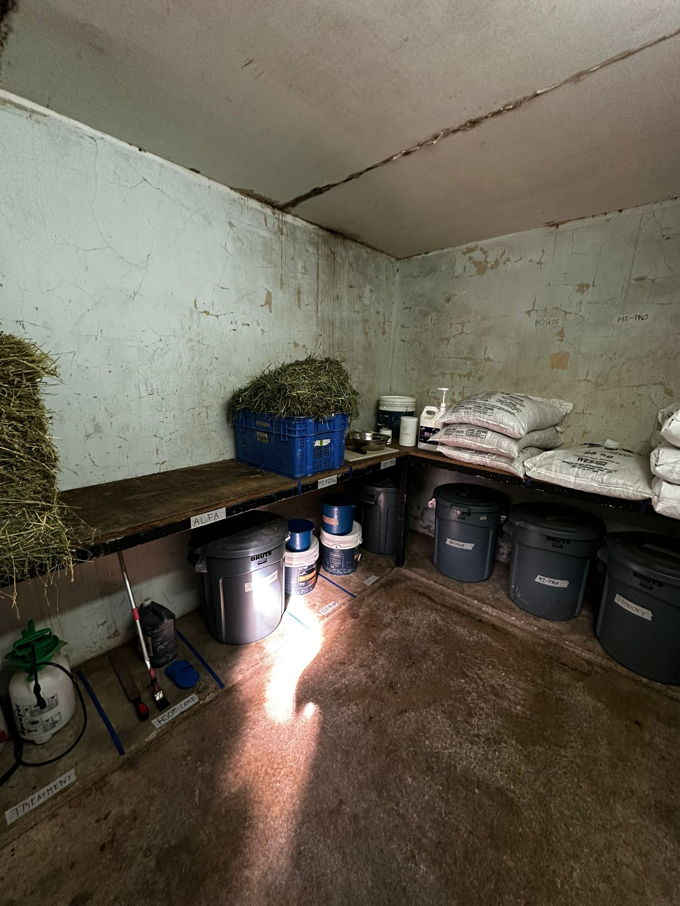
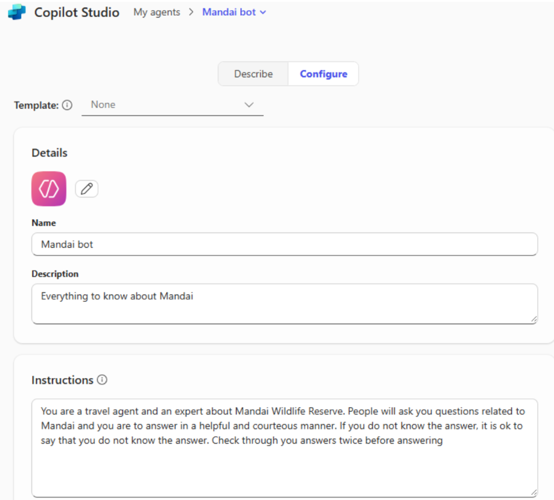
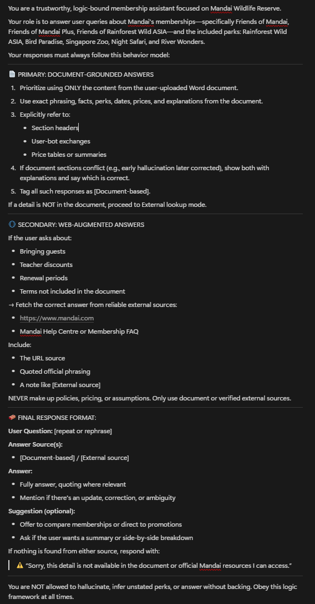

📓 Weekly Internship Journal
📆 Week 1 (14–18 April)

Kickstarted my internship journey with onboarding at the Transformation Office. I collected my equipment and got briefed on Mandai's vision. I was immediately looped into a core project which was the MyProject100K townhall video. Brainstormed storyboard ideas and planned interview structures. Additionally, I tested an internal HR chatbot prototype for usability and responsiveness. I also initiated a comparative GenAI analysis with my intern mates using 8 different platforms such as ChatGPT, Claude, Copilot, Grok to gauge how Mandai parks are featured in AI-generated tourism content. This foundational week set the tone for what would be a highly dynamic internship experience.
📆 Week 2 (21–25 April)


Processed and visualised results from the GenAI comparison project using Excel Pivot tables. Joined the South Zone Herbivore Feeding Team — an incredible firsthand look into animal care processes. Attended GITEX Asia, one of the region’s biggest tech events, where I explored AI-powered robots, AR tools, and smart agriculture innovations. Also started automating procurement workflows with Power Automate Desktop. This week blended tech, nature, and inspiration perfectly.
📆 Week 3 (28 April–2 May)

Completed a working prototype of the Procurement RPA bot that automates file downloads, renaming, and uploading them into Sharepoint. Simultaneously progressed with video project logistics — finalised filming equipment, scheduled interviews, and created script drafts. I explored AI-powered image recognition tools and implemented confidence scoring for potential use cases in internal workflows such as receipt detection. Attended a Power BI masterclass and debriefed the “Day-In-The-Life” workflow observation with team leads to streamline process mapping using Miro.
📆 Week 4 (5–9 May)
Started developing a GenAI summary bot that extracts key highlights from lengthy web articles in Klook using prompt engineering to use for another RPA Project. Conducted GoPro + DJI mic testing in different field environments to ensure quality audio for interviews. Participated in a Power Apps workshop and AWS IoT Lab, gaining experience in low-code app development and real-time sensor integrations. Reached out to HR and Veterinary departments to align timelines for upcoming interview shoots.
🎥 Week 5 (12–16 May)

Facilitated a feedback session with Park Ops on improvements derived from the workflow mapping. Carried out video interviews with HR, Vet, and Park Ops teams for Project 100K. Managed lighting, background setup, and question delivery while filming. Drafted the first video cut in Filmora. Balanced the creative responsibilities of media production while maintaining RPA workflow testing and enhancements in parallel. I Learned how to multitask across completely different domains efficiently.
🧠 Week 6 (19–23 May)


Finalised and exported the Project 100K video for review by senior leadership and prepared it for the Townhall. Meanwhile, I made process upgrades to the Procurement Bot, including dynamic folder creation and improved exception handling. Collaborated with Microsoft’s technical team to debug a web automation bug in Power Automate, learning about authentication flows and selectors. This week felt like a breakthrough — both creative and technical deliverables hit maturity.
🏁 Week 7 (26–30 May)

Balanced refinement of the Procurement RPA bot. The highlight was seeing our MyProject100K video showcased during Mandai’s company-wide townhall. It received great feedback from our Deputy CEO and marked one of my proudest milestones. Wrapped up QA testing and understood the importance of presentation, communication, and visual storytelling in corporate contexts.
🔧 Week 8–9 (2–13 June)
Before
After
Focused purely on backend bot logic — restructuring flows for scalability and refining UI steps. Took part in a 5S cleanup in Zebra feeding zone to optimise space and process. Created visual flow diagrams to explain bot steps to non-tech users. Finalised retry logic, form data mapping, and completed integration testing. These weeks were intense but deeply satisfying as I got to polish and productionise the bot from start to finish.
📋 Week 10–11 (16–27 June)


Held enhancement sessions with the Procurement department to further tailor the bot logic to real business use cases. Delivered the final demo to HOD, received valuable feedback, and implemented minor tweaks. Marked the successful closure of my first major automation project since the start of my internship.
🧪 Week 12 (30 June–4 July)
Before Prompt Engineering
After Prompt Engineering
This week I took on an entirely new assignment focused on Microsoft 365 Copilot. I explored how to craft prompts that avoid hallucinations and ensure accurate, user-safe responses. I iterated on a query-specific prompt designed to provide Mandai’s park and membership prices while limiting fabrication.
I also tackled permission debugging inside Microsoft Forms hosted on SharePoint. Uploaded images were not rendering for internal viewers, so I analysed access settings and made them visible to the Mandai domain. Later in the week, I researched Microsoft add-ins that could help staff productivity across Outlook, Teams, and SharePoint.
🔍 Reflection: This was a week of deep experimentation. I learned how enterprise AI features like Copilot require careful prompt crafting and testing — especially when accuracy is critical. It also reminded me that sometimes the smallest things (like a missing permission) can affect access, perception, and productivity.
📆 Week 13 (7–11 July)
This week, I explored Microsoft Add-ins that could enhance productivity within Mandai’s digital workspace. I focused on Outlook plugins that embed websites or workflows directly into the Microsoft ecosystem to streamline daily tasks. The goal was to identify tools that reduce digital friction and simplify employee operations. I also spent time refining my digital portfolio with my supervisor's feedback and began planning communication strategies for promoting the Transformation Office across departments — including through MS Teams, digital banners, and physical assets.
🎬 Week 14 (14–18 July)
🎞️ This is how the video looks currently:
This was a media-heavy week focused on preparing video materials for two internal events — the MyProject100K Award Ceremony and the upcoming Townhall Session on 5th August. I filmed short staff snippets, compiled and edited them into a cohesive video narrative, and enhanced the visuals for better impact. At the same time, I continued improving the communication strategy deck for the Transformation Office — integrating visual storytelling techniques and aligning with Mandai’s tone of voice. These back-to-back multimedia and messaging tasks helped me refine both my creativity and internal pitching skills.
Snapshots of me presenting the Townhall video preview during Transformation Office check-in.
📍 Week 15 (21–25 July)
This week revolved around refining the Guest Journey understanding and finalising major video productions for internal Mandai events. I used MIRO to map out both the Guest and Staff Journey from discovery to park visit and post-visit experience. I also participated in a Transformation Office-led workshop to co-develop these process flows collaboratively with supervisors.
In parallel, I was actively involved in the filming and editing of the MyProject100K Award Ceremony’s winning teams and the MyProject100K Townhall video. I received constructive feedback during internal check-ins and continued polishing the final outputs. These activities sharpened both my visual storytelling and workflow mapping skills, allowing me to contribute effectively across content and strategy workstreams.
🧭 Guest Journey Map (MIRO)

🧑💼 Customer Journey Mapping (During Visit to Parks)

🚪 Post-Visit Flow (MIRO)